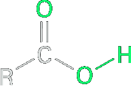
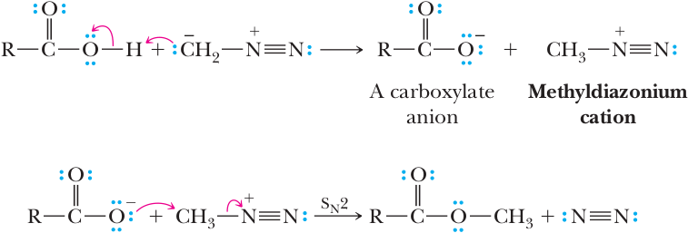

Formation of Methyl Esters Using Diazomethane
Diazomethane is used to form methyl esters from carboxylic acids. The mechanism involves protonation of the diazomethane carbon atom by the carboxylic acid to make a methyldiazonium cation, followed by attack of the resulting carboxylate on the methyldiazonium cation to give the methyl ester and N2.
 | + | CH2N2 Diazomethane | ether ⟶ | + | N2 |
Because diazomethane is explosive and poisonous, it is used only when other means of preparing methyl esters are not suitable.
|  | + | CH2N2 Diazomethane | ether ⟶ | + | N2 |
Diazomethane, a potentially explosive, toxic yellow gas, is best represented as a hybrid of two resonance contributing structures.
(a resonance hybrid of two important contributing structures)
Because of the hazards associated with the use of diazomethane, it is used only where other means of preparation of methyl esters are too harsh, and even then, it is used only in small quantities.
Mechanism
Step 1: Take a proton away. Proton transfer from the carboxyl group to diazomethane gives a carboxylate anion and methyldiazonium cation.
Step 2: Make a new bond between a nucleophile and an electrophile. Nucleophilic displacement of N2, an extraordinarily good leaving group, gives the methyl ester.
